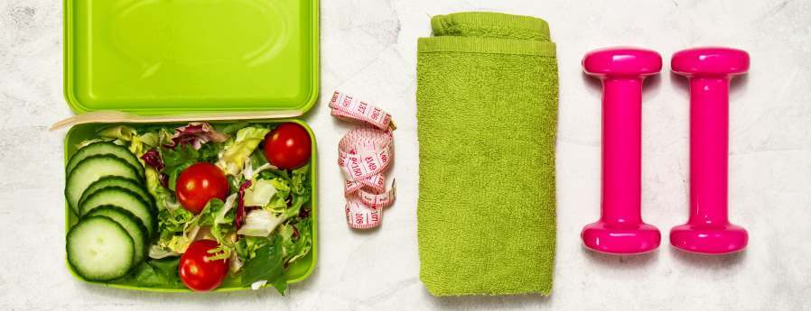

kierunek zdrowie: Dieta niełączenia - prawidłowe łączenie pokarmów i komponowanie posiłków
Strony
Strona główna Moje KSIĄŻKI Jadłospis i kalkulator BMR Oczyszczanie organizmu Jak schudłam ponad 30kg Warsztaty WspółpracaPowitanie
Witaj na moim blogu☼ Skoro już tu jesteś, pewnie interesujesz się zdrowym odżywianiem. Chętnie podzielę się z Tobą moją pasją i wiedzą. Nie znajdziesz tu przepisów z użyciem białej mąki ani białego cukru, ale z pewnością znajdziesz dużo smaczniejszych i lepszych pomysłów na zdrowe życie ☼ Zapraszam do czytania i komentowania moich wpisów oraz oglądania filmów. Mam nadzieję, że miło spędzisz czas:-) Ściskam Cię serdecznie, SylwiaZapraszam do subskrypcji moich filmów na you tube:-)
poniedziałek, 1 września 2014
Dieta niełączenia - prawidłowe łączenie pokarmów i komponowanie posiłków
Zrobiłam niedawno filmik i post na temat świadomego jedzenia. Teraz chcę Was zachęcić nie tylko do tego, by jeść świadomie i powoli, ale również łączyć prawidłowo pokarmy. Jest to ogromnie ważne i niezbędne do prawidłowego trawienia, a więc również dla naszego zdrowia i samopoczucia. Gdy nieprawidłowo komponujemy posiłki, wiele pokarmów nie zostaje strawionych i latami zalega w naszych jelitach, gnijąc i fermentując. Powstają bakterie, które wytwarzają toksyny i zatruwają nasz organizm. To z kolei jest powodem wielu chorób - co chyba nikogo dziwić nie powinno:-) Organizm daje nam często znaki, że nie jemy właściwie, ale wiele osób nie zwraca na to uwagi myśląc, że to normalne reakcje:-) Mam tu na myśli bóle głowy, zgagę, gazy, wzdęcia, spadek energii i osłabienie po posiłku. Gdy odżywiamy się zdrowo i prawidłowo łączymy pokarmy - takich objawów nie ma.https://www.youtube.com/watch?v=9Dv_Nwjpq2M Do strawienia poszczególnych grup pokarmowych nasz organizm musi wytworzyć odpowiednie enzymy. Są one różne dla różnych pokarmów, a także dla poszczególnych odcinków trawiennych (jeśli na początku trawienia jakiś enzym odpowiednio nie rozłoży i nie przygotuje pokarmu, następny już sobie nie da rady...) Różne grupy żywieniowe potrzebują również innego czasu na strawienie, a także stopnia kwasowości. Białkom potrzebne jest środowisko kwaśne, a węglowodanom zasadowe. Gdy oba takie produkty zostają zjedzone jednocześnie, w naszym organizmie powstaje niezłe zamieszanie i chaos. Rozumiecie teraz jakie to ważne? Byle jakie łączenie pokarmów, traktowanie swojego ciała jak śmietnik, bardzo obciąża poszczególne organy i prowadzi do wielu problemów zdrowotnych. Wyróżniamy trzy podstawowe grupy żywieniowe: * białka *tłuszcze *węglowodany Białka to między innymi mięso, ryby, jaja, sery, orzechy, fasole, soczewica, grochy i ich kiełki, nasiona, miso, jogurty. Tłuszcze to np. masło, awokado, oliwki, śmietana, oleje. Węglowodany , ze względu na specyfikę ich trawienia, możemy podzielić na: ♦ warzywa nieskrobiowe : *liściaste - sałaty, jarmuż, szpinak *większość warzyw ♦ warzywa skrobiowe i cukry - m.in. zboża i ich kiełki, kasze, ziarna, chleby, makarony, wyroby cukiernicze, ziemniaki, kukurydza, banany, daktyle białka + skrobiowe = ŹLE Nie możemy łączyć białek z warzywami skrobiowymi i cukrami. To najgorsze z możliwych połączeń. Przykłady łączenia białka ze skrobią : chleb z mięsem; chleb z serem; ryby lub mięso z ziemniakami, makaronem lub kaszami Jest w takim połączeniu jeden wyjątek, o którym wiele razy słyszałam. Chodzi o połączenie np. fasoli z ryżem. Jest to białko i skrobia, ale w tym przypadku tworzą one kompletne białko, czyli dostarczają wszystkie aminokwasy egzogenne. Aminokwasy te znajdują się produktach odzwierzęcych, a osoby będące na dietach roślinnych mogą je uzyskać łącząc właśnie w ten sposób strączkowe i zboża. Ilość białka w takim połączeniu powinna być znacznie mniejsza niż skrobi.
białka + tłuszcze = ŹLE Łączenie białek z tłuszczami nie jest również najzdrowszą opcją. Tłuszcze hamują trawienie białka, poza tym białka same zawierają często duże ilości tłuszczu, więc nie powinno się dokładać tych tłuszczów jeszcze więcej. Tutaj przykładem mogą być orzechy, które zaliczane są do grupy białek wysokotłuszczowych - składają się one w większości z tłuszczów. Polewanie dodatkowym tłuszczem mięsa czy ryb, a także fasoli lub orzechów - szkodzi naszemu zdrowiu. skrobiowe + tłuszcze = OK Połączenie skrobiowych z tłuszczem jest dopuszczalne, więc jeśli macie ochotę na płatki owsiane z masłem - możecie sobie na to pozwolić:-) tłuszcze + warzywa nieskrobiowe = OK To jest dobre połączenie. Tłuszcze - dodawane oczywiście z umiarem - pozwalają na lepsze przyswojenie niektórych substancji odżywczych z warzyw i liści. Doskonale sprawdzają się jako dressingi do sałat. owoce + tłuszcze = ŹLE Owoce nie powinny być łączone z tłuszczami, szczególnie gdy zależy nam na zrzuceniu wagi. Najlepiej jeść je na czczo, na pusty żołądek, a więc rano. Nie powinno się ich z niczym łączyć, poza - oczywiście wyjątek musi być:-) - warzywami liściastymi i selerem naciowym. owoce + liściaste i seler naciowy = OK Żeby trawienie było jak najbardziej korzystne dla naszego zdrowia, dobrze jest jadać owoce jako mono posiłki, czyli tylko jeden rodzaj za każdym razem. Można je ze sobą łączyć, ale też nie wszystkie się razem dobrze trawią. Owoce dzielimy pod względem kwasowości na trzy grupy: * owoce słodkie (banany, daktyle, figi, kaki, owoce suszone) * owoce półkwaśne (jabłka, jagody, gruszki, morele, brzoskwinie, winogrona, śliwki, wiśnie, mango, papaja) * owoce kwaśne (cytryna, limonka, grejpfrut, pomarańcza, pomidor, truskawka, ananas, granat, kiwi) Możemy łączyć owoce słodkie z półkwaśnymi i kwaśne z półkwaśnymi, ale nie powinno się łączyć słodkich z kwaśnymi. owoce kwaśne + tłuszcze = OK Są takie pary pokarmów, które się wzajemnie wspierają i zwiększają przyswajalność niektórych substancji. Należą do nich np. brokuły z pomidorami, pomidory z avocado, szpinak z jajkiem szpinak z cytryną lub papryką ogórek + pomidor = ? Chyba najbardziej kontrowersyjnym połączeniem jest ogórek z pomidorem. Często słyszymy, że nie możemy ich ze sobą łączyć, ze względu na obecność w ogórkach askorbinazy . Jest to enzym, który niszczy witaminę C. Nawet niewielka jego ilość w sałatce zniszczy całą tę witaminę, nie tylko w pomidorach, ale również w sałacie, papryce czy natce pietruszki. I nie tylko ogórek jest źródłem askorbinazy - są nim także dynie, cukinia, kabaczek... Jest jednak jeden sposób, by askorbinazę inaktywować. Trzeba zmienić jej ph, a można to zrobić skrapiając ogórek cytryną lub octem. I sprawa załatwiona, możemy spokojnie jeść ogórki z pomidorami:-))) Myślę, że odpowiednie łączenie pokarmów na ogromne znaczenie dla naszego zdrowia i nie można tego tematu bagatelizować. Warto zwracać uwagę na to co, jak i kiedy jadamy i traktować nasze ciała jak najwspanialsze świątynie. Jest to w końcu nasz pojazd na tym świecie, którego nie można wymienić i ma nam służyć przez całe nasze życie☼
źródło: Paul Pitchford "Odżywianie dla zdrowia" Wyślij pocztą e-mail Wrzuć na bloga Udostępnij w usłudze Twitter Udostępnij w usłudze Facebook Udostępnij w serwisie Pinterest Labels: Inne , Warto wiedzieć
89 komentarzy:
Unknown 1 września 2014 12:19Bardzo tresciwy i bogato przedstawiony temat.Wiekszosc tych zasad juz stosuje.Wystarczy kilka lekcji i bedzie jeszcze zdrowiej.Na poczatku to byla dla mnie czarna magia.Teraz juz sama potrafie laczyc pokarmy bez podpowiedzi.Pozdrawiam cieplo!!Marzena
Odpowiedz Usuń Odpowiedzi kierunek zdrowie 3 września 2014 19:29super Marzena, dzięki:-)
Usuń Odpowiedzi Odpowiedz Odpowiedz Unknown 1 września 2014 12:29świetny post, nie wiedziałam aż tyle na temat łączenia skladników posiłku. Zazwyczaj starałam się nie łączyć ziemniaków kasz czy ryżu z mięsami zwłaszcza smażonymi teraz wiem troche więcej na ten temat:)
Odpowiedz Usuń Odpowiedzi kierunek zdrowie 3 września 2014 19:31cieszę się:-) pozdrawiam
Usuń Odpowiedzi Odpowiedz Odpowiedz Anonimowy 1 września 2014 13:12 Ciekawe co piszesz. Czytałam kiedyś u przeciwników tej metody jedzenia, że tak naprawdę to wchłanianie zachodzi i węglowodanów i białek w jelicie cienkim, a tylko u węglowodanów ten proces jest szybszy (bo zachodzi już w jamie ustnej) i nie wgłębiałam się dalej. Nie wiedziałam że to takie ważne w prawidłowym jedzeniu. :)
Kiedyś czytałam, że nie nalezy jesc owoców na noc ... Możliwe, bo zawsze boli mnie brzuch gdy zjadam taką kolację. :)
wiele osób nie może jeść na noc owoców, ale ja czasami jem i nic mi nie jest:-)
Usuń Odpowiedzi Odpowiedz Anonimowy 10 marca 2016 16:07 Nie sądzę by brzuch bolał cię od jedzenia owoców na noc. Może trzeba szukać gdzie indziej przyczyny.
Ludzie jedzą owoce - nawet na noc i brzuchy ich nie bolą. Inną sprawą jest czy to zdrowo czy nie? Jedni mówią, że drudzy racji nie mają. Zalecam umiar i rozsądek w tej kwestii. Najlepiej wsłuchiwać się i wnikliwie obserwować swój organizm oraz badać się, badać się, badać się.
Witam, to co piszesz stosuję od dwudzistu paru lat- dieta Diamondow propagowania w Polsce przez dr Bialkowska. Mi bardzo pomogła szczególnie w utracie wagi:)
Usuń Odpowiedzi Odpowiedz Odpowiedz Kinga 1 września 2014 21:25bardzo przydatny post ;)
Odpowiedz Usuń Odpowiedzi kierunek zdrowie 3 września 2014 19:31dziękuję Kinga
Usuń Odpowiedzi Odpowiedz Odpowiedz Anka 1 września 2014 21:44 A ja na to powiem krótko: cieszę się, że urodziłam się i wychowałam w zdrowych czasach, kiedy nie rozprzestrzeniała się taka żywieniowa patologia... :/
I nie, uprzedzam, nie będę się wdawać w dłuższe dyskusje, zdrowego rozsądku nie trzeba tłumaczyć. Powodzenia.
Aj, nie denerwuj się tak ;). Ludzie muszą trochę poświrować. Kiedyś mówiono że w końcówkach banana są lamblie, teraz że trzeba łączyć odpowiednio posiłki. No ba, przecież sam Tombak pisał o tym w swojej książce. I nie ma znaczenia, że nauka tego nie potwierdza, a nawet nie zawraca sobie tym głowy. Taka ukryta prawda :).
Usuń Odpowiedzi Odpowiedz Anonimowy 5 lutego 2015 06:50kiedyś było kiedyś, dzisiaj jest dzisiaj, jesteśmy wystawieni na zanieczyszczenia i antybiotyki od dzieciństwa. Nie mamy prawidłowej flory bakteryjnej, słabszy kwas w żołądku niż powinien, mieszkając w mięście jemy zdecydowanie za mało surowych warzyw świeżo wyrwanych z gleby (za mało enzymów trawiennych). To wszystko czyni że musimy przywiązywać do tego uwagi wiecej w dzisiejszych czasach. Poza tym spójrz na Polaków co sStaten Island dzieje w ostatnich latach na ulicach. Brzuchy wiszą coraz większej części populacji, Polacy coraz bardziej wyniszczeni wyglądają w coraz młodszym wieku.
Usuń Odpowiedzi Odpowiedz Anonimowy 14 grudnia 2016 04:44Gdyby nie ta żywieniowa patologia to ja bym dawno umarła przy mojej chorobie jelita. Tylko dieta rozłączna. Życzę zdrowia do końca Pana (-i) dni!
Usuń Odpowiedzi Odpowiedz Odpowiedz Aska gotuje 1 września 2014 22:44czekalam na ten wpis:)mowie,polecam i zachęcam.Przekonalam do zdrowego odzywiania 2 bliskie mi osoby a pomogla mi moja przemiana ktorą osiągnelam dzięki Tobie! Na bieząco przekazuje im informacje od Ciebie:)dziękuje kochana pozdrawiam:)
Odpowiedz Usuń Odpowiedzi kierunek zdrowie 3 września 2014 19:33Asiu, nawet nie wiesz jak mi miło, że tak piszesz. Dzięki:-)
Usuń Odpowiedzi Odpowiedz Odpowiedz Oliwia Wieczorek 3 września 2014 02:53Przyznam, że sporo już się naczytałam na temat zdrowego odżywiania i do większości podstawowych zasad już się stosuje, ale nie miałam pojęcia, że odpowiednie łączenie różnych pokarmów również jest aż tak istotne. Chyba zrobię sobie notatki z tego twojego wpisu :) Dzięki i pozdrawiam!
Odpowiedz Usuń Odpowiedzi kierunek zdrowie 3 września 2014 19:34Jest mi ogromnie miło, że komuś się ten post przyda:-)
Usuń Odpowiedzi Odpowiedz Odpowiedz Unknown 3 września 2014 03:00Wow, otworzyłaś mi oczy. Od jakiegoś czasu na śniadanie jadam omlet ze szpinakiem i pomidorem, a teraz dzięki tobie już więcej nie zrobię tego połączenia obciążającego mój żołądek. Bardzo inspirujący post, dzięki!
Odpowiedz Usuń Odpowiedzi kierunek zdrowie 3 września 2014 19:45Dzięki Maggie!
Usuń Odpowiedzi Odpowiedz Anonimowy 16 lutego 2017 21:57Zaraz? A czy to połączenie nie jest ok??
Usuń Odpowiedzi Odpowiedz Odpowiedz Unknown 3 września 2014 22:32 Witam.
Od niedawna zacząłem interesować się zdrowym odżywianiem, oczyściłem jelito grube i jestem po pierwszym oczyszczaniu wątroby. Co do diety rozdzielnej i nie tylko mam dużo pytań, wertując internet natrafiłem na Pani bloga z czego się bardzo cieszę. Mam nadzieje, że pomoże mi Pani i odpowie na kilka nurtujących mnie pytań:
1. Z czym łączyć chleb? Z czym poleca Pani robić kanapki np jako drugie śniadanie do pracy (ja np kanapki robię z pomidorem, ogórkiem kiszonym cebulką, ale to połączenie już mi się znudziło i szukam jakiejś nowości )
2. Zdarza mi się pracować na nocnej zmianie, co jeść lub czy w ogóle jeść w nocy?
3. Bardzo lubię słodycze, batony, colę. Staram się to ograniczać ale łaknienie na słodycze w szczególności wzrasta gdy jestem po ciężkim treningu (trenuję sztuki walki), co zrobić by zahamować to łaknienie bo doskonale wiem że cukier to zło.
4. Co Pani myśli o diecie zgodnej z grupą krwi?
Pozdrawiam
Kamil
polecam banany po treningu ;) ja nie jem słodyczy, a na śniadanie, zaraz po treningu 7 bananów i kilka śliwek styka ;)
Usuń Odpowiedzi Odpowiedz Odpowiedz Anonimowy 7 września 2014 02:48 Witam,
Mam do Ciebie pytanie całkowicie na inny temat, wiem, że masz 2 corki ktore, chodzą do amerykańskiej szkoły, jestem bardzo ciekawa(jeśli oczywiście posiadasz taką wiedzę), czy szkoły w Usa gwarantują pomoc osobom z autyzmem wysoko i niskofunkcjonującym, czy dla takich osób są dodatkowe zajęcia, czy nauczyciele są wyczuleni na takie osoby i jeśli zauważą określone objawy, to zareagują. Wiem, że to trudne pytanie, ale byc może do szkoły, do, której uczęszczaja twoje dzieci, chodzą też dzieci autystyczne i macie styczność z takimi osobami.
Jest w naszej szkole specjalna klasa z dziećmi autystycznymi, ale szczerze mówiąc nie potrafię odpowiedzieć na Twoje pytania.
Usuń Odpowiedzi Odpowiedz Odpowiedz Anonimowy 7 września 2014 07:37Można się nieźle zakręcić na temat zdrowego odżywiania, najważniejsze to zachować zdrowy rozsądek, wsłuchać się w siebie i zachować umiar we wszystkim
Odpowiedz Usuń Odpowiedzi Odpowiedz Anonimowy 7 września 2014 11:08Swietny filmik jak i tez bardzo przydatny komentarz na blogu, pozdrawiam serdecznie. Mam pytanie Awokado zaliczysz do owocow ..czy tluszczy??? ... Ja osobiscie zaliczam je do do grupy owcow tzw. OLEISTYMI ( oliwki, migdaly, orzechy, sezam, orzeszki ziemne, kokos ..etc) one maja rowniez zasade i nie jest wskazane mieszanie ich z owocami kwasnymi ani polkwasnymi ani tez miedzy soba , nie jest wskazane laczenie ich z nasionami straczkowymi ani tez z kielkami. Okropnym polaczeniem beda z jajkami czy pochodnymi mleka, jogurtu etc.. Najlepiej dla mnie jest je mieszac z owocami neutro , warzywami , czosnek i cebula moze rowniez byc... ale tak jak ktos wspomnial wczesniej kazdy ma inna wytrzymalosc! Zycze wszystkim zdrowka! :)
Odpowiedz Usuń Odpowiedzi Anonimowy 10 marca 2016 16:14Awokado jest owocem
Usuń Odpowiedzi Odpowiedz Odpowiedz untyl 8 września 2014 01:34Proszę o kilka propozycji dań obiadowych. Niestety w tej kwestii jestem tradycjonalistą. Nie lubię próbować nowych dań. Moim największym problemem jest duży brzuch i chrapanie.
Odpowiedz Usuń Odpowiedzi Odpowiedz Anonimowy 2 listopada 2014 07:10To w takim razie czy można łączyć płatki owsiane z mlekiem?
Odpowiedz Usuń Odpowiedzi Odpowiedz Anonimowy 7 listopada 2014 11:10Wspaniały blog , gratuluję .
Odpowiedz Usuń Odpowiedzi Odpowiedz Unknown 11 listopada 2014 12:52Bardzo fajny filmik, ja częściowo się już do tych zasad stosuje. Mój sposób żywienia opiera się głównie na warzywach i strączkowych, żadnego nabiału ani jajek. Z mięsa zostawiłam tylko rybę a to dlatego że mam problem z witaminą B12. Nie ma jej w roślinach a suplementy w tabletkach słabo się wchłaniają. Po badaniach krwi lekarze przepisują mi zastrzyki które tak średnio lubię. A jak ty radzisz sobie z tą witaminą?
Odpowiedz Usuń Odpowiedzi kierunek zdrowie 26 lutego 2015 18:59Ja piję tę witaminę - podobno w płynie wchłania się najlepiej. Z tego co wiem wchłanialność B12 zmniejsza się z wiekiem nawet u osób jedzących mięso. Ja robię sobie badania i wychodzi, że b12 mam na razie w normie.
Usuń Odpowiedzi Odpowiedz Odpowiedz Anonimowy 27 stycznia 2015 14:16Łączenie ogórka z pomidorem nigdy mi nie odpowiadało i nie za względu na to ,że witamina C jest niszczona ,ale te dwa smaki łączone nie sprawiały mi przyjemności w jedzeniu.Tenia
Odpowiedz Usuń Odpowiedzi Odpowiedz Anonimowy 23 lutego 2015 11:15 Po 1
Bialko tluszcze weglowodany to NIE GRUPY ZYWIENIOWE !! GRUP ZYWIENIOWYCH JEST 12 A NIE 3!!
Po 2
W 11.12 min filmu Jak bialko moze miec tluszcz skoro bialko i tluszcze to skladniki odzywcze !!
RADA: prosze poczytac na stronie IŻŻ i pozniej opowiadac a nie wprowadzac w blad!
no te tłuszcze w białku też mnie rozwaliły ;d pani widocznie sporo upraszcza
Usuń Odpowiedzi Odpowiedz Odpowiedz Anonimowy 23 lutego 2015 11:19 Po3
Jak bialko moze byc wysokotluszczowe? Nie ma Takiego terminu !! Iwona
Droga Iwono widać, że jesteś bardzo sfrustrowana. Szkoda, że jeśli masz inne zdanie musisz ubliżać i poniżać innych. Można je przecież wyrazić w sposób grzeczny i kulturalny. Szczerze liczę, że kiedyś się to zmieni i ludzie będą się do siebie inaczej odnosić. A jeśli chodzi o łączenie pokarmów - proponuję Ci napisać do dr Pitchforda - możesz sobie wtedy podyskutować. . Pozdrawiam i życzę więcej miłości dla siebie♥
Usuń Odpowiedzi Odpowiedz Magda 12 czerwca 2015 01:08 Hmm. Iwona może wyraziła swoją krytykę w sposób niezbyt kulturalny ale skąd wniosek, że jest sfrustrowana. Ubliżania, poniżania czy wyzywania też nie widzę, o_O
Ja jako biolog powiem Ci że popełniłaś błąd mówiąc o czymś takim jak bialko wysokotłuszczowe, Chemicznie białko się składa z aminokwasów a tłuszcz to zupełnie inna grupa związków chemicznych. Rozumiem natomiast że mógł być to skrót myślowy bo faktycznie produkty wysokobiałkowe mogą być także wysokotłuszczowe chociaż nie zawsze. Nie wyrażając się precyzyjnie faktycznie można ludzi wprowadzić w błąd i należy brać to pod uwagę. Oczywiście uważam Twoje filmy za bardzo cenne natomiast takie pomyłki Ci się zdarzają i nie ma się co oburzać, bo bronisz się w sposób agresywny
Magda - dziękuję
Usuń Odpowiedzi Odpowiedz kierunek zdrowie 17 czerwca 2015 17:34Magdo, myślę, że w odpowiedzi na bardzo niegrzeczny komentarz Iwony wszystklo wyjaśniłam. Powołałam się na cenionego lekarza i są to jego teminy - nie jestem biologiem ani chemikiem i nie muszę też zagłębiać się w te rzeczy, nie widzę nawet takiej potrzeby. Dlatego też nie tworzę własnych teorii, a powołuję się na książki autorytetów. Dziękuję jednak za Twoje wyjaśnienie, z pewnością takie rzeczowe i wyjaśniające komentarze pomogą nam lepiej zrozumieć temat. Fajnie, jeśli ma się coś do powiedzenia i robi się to w sposób kulturalny, bo to naprawdę nie jest takie trudne przy odrobinie dobrych chęci:-) Pozdrawiam
Usuń Odpowiedzi Odpowiedz Anonimowy 10 marca 2016 16:25Ależ szanowna Pani, przekazuje Pani swoją wiedzę i dzieli się nią na swoim blogu. Nie zacytowała Pani tylko niestety palnęła bez zastanowienia. W takich sprawach jak zdrowie ludzkie należy brać trochę więcej odpowiedzialności. Ludzie Panią czytają i nawet notuję co Pani pisze na swoim blogu (patrz komentarz wyżej). Wypadałoby może jednak sprawdzać wiadomości które się chce podawać do szerszej publiczności.
Usuń Odpowiedzi Odpowiedz kierunek zdrowie 4 kwietnia 2016 18:22Szanowny Panie, dobrze byłoby najpierw obejrzeć filmik przed komentowaniem...- podałam też źródło mądrości, o których mówię, a nie moich własnych teorii. Może chciałby Pan podyskutować z ich autorem?
Usuń Odpowiedzi Odpowiedz irene 6 lipca 2019 21:49 Hej alla vänner - jag fick smaka en liten droppe av starka AMOL av en väninna - jag är nyfiken av mig - jag letade AMOL på You tube - jag hittade DIG _ jag är mycket tacksam - kram till dig - jag har mycket ont i armen och nerver i kläm - och ont i magen av mat - jag ska lära allt av dig - bry dig inte om de kvinnor som har elaka kommentarer här - vi är alla vänner och beroende av frisk kropp och god hälsa som ger daglig glädje - Gud välsigne Dig ...
Witam. Mam pytanie. Z czym mogłabym w takim razie jeść owsiankę rano? Nie mam na myśli mleka, ale lubię dodać do niej nasiona lnu i inne pestki, a także orzechy.
Pozdrawiam serdecznie.
Monika
Ten komentarz został usunięty przez autora.
Odpowiedz Usuń Odpowiedzi Odpowiedz Unknown 17 sierpnia 2015 09:21Zaczęło sie od kupna kielków..google..szukanie pomyslu na to jak i z czym je jeść,moze tez zasiać;)trafilam na Twoj filmik..spodobalo mi sie jak mówisz..płynnie i tak jakos ze chce sie sluchac...dzis jestem juz na etapie zakwasu na chlebek(stoi na kuchence..nawet w ciszy słucham jak pracuje..naprawde slychac;))..zamowilam tez ksiazki(mam problem z nadwaga)...lubie zjesc duuuużo i niekoniecznie zdrowo...duzo tez pilam niestety:/....dzieki Bogu ze natrafilam Twojego bloga...jestes super kobitka!!pozdrawiam!!
Odpowiedz Usuń Odpowiedzi Odpowiedz Unknown 17 sierpnia 2015 09:22Zaczęło sie od kupna kielków..google..szukanie pomyslu na to jak i z czym je jeść,moze tez zasiać;)trafilam na Twoj filmik..spodobalo mi sie jak mówisz..płynnie i tak jakos ze chce sie sluchac...dzis jestem juz na etapie zakwasu na chlebek(stoi na kuchence..nawet w ciszy słucham jak pracuje..naprawde slychac;))..zamowilam tez ksiazki(mam problem z nadwaga)...lubie zjesc duuuużo i niekoniecznie zdrowo...duzo tez pilam niestety:/....dzieki Bogu ze natrafilam Twojego bloga...jestes super kobitka!!pozdrawiam!!
Odpowiedz Usuń Odpowiedzi Odpowiedz Unknown 17 sierpnia 2015 09:22Zaczęło sie od kupna kielków..google..szukanie pomyslu na to jak i z czym je jeść,moze tez zasiać;)trafilam na Twoj filmik..spodobalo mi sie jak mówisz..płynnie i tak jakos ze chce sie sluchac...dzis jestem juz na etapie zakwasu na chlebek(stoi na kuchence..nawet w ciszy słucham jak pracuje..naprawde slychac;))..zamowilam tez ksiazki(mam problem z nadwaga)...lubie zjesc duuuużo i niekoniecznie zdrowo...duzo tez pilam niestety:/....dzieki Bogu ze natrafilam Twojego bloga...jestes super kobitka!!pozdrawiam!!
Odpowiedz Usuń Odpowiedzi Odpowiedz Halina Pakosz 26 sierpnia 2015 01:30Super klarownie wyjaśnione. Życzę powodzenia z kolejnymi postami, artykułami. Będę Tu Zaglądać :)
Odpowiedz Usuń Odpowiedzi Odpowiedz Medley 28 sierpnia 2015 10:33Ten komentarz został usunięty przez autora.
Odpowiedz Usuń Odpowiedzi Odpowiedz Anonimowy 1 września 2015 04:36Fajny post, tylko brakuje mi w nim informacji na temat możliwości łączenia białka. Z czym jest optymalnie, a z czym raczej nie???
Odpowiedz Usuń Odpowiedzi Odpowiedz Anonimowy 1 września 2015 04:37bea
Odpowiedz Usuń Odpowiedzi Odpowiedz Unknown 18 listopada 2015 04:23Witam. Powiedz mi proszę z czym mogę jeść płatki owsiane, oraz jęczmienne i najlepiej o jakiej porze? mam uczulenie na cytrusy oraz nie mogę pić mleka. Czy płatki łączyć z nabiałem (czyli jogurt) czy lepiej z samymi owocami (zalane wodą i jakieś owoce) czy mogę dodać odrobinę miodu?... Liczę na twoją pomoc i kilka fajnych propozycji :) Twój artykuł jest bardzo pomocny :). Wiem już z czym łączyć soczewicę :) Pozdrawaim :)
Odpowiedz Usuń Odpowiedzi Odpowiedz Joanna 22 listopada 2015 01:11witam,czy można w takim razie - biorąc pod uwagę wspomniany wyjątek dotyczący m.in. ryżu i soczewicy - jeść np. kanapki z hummusem, czy jakimś pasztetem na bazie strączków?
Odpowiedz Usuń Odpowiedzi Odpowiedz www.stomatologdladzieciakow.pl 9 grudnia 2015 03:15Świetny artykuł. Spróbuję powoli wdrażać te zasady, i zobaczymy co wyjdzie :)
Odpowiedz Usuń Odpowiedzi Odpowiedz Unknown 7 lutego 2016 01:26Witam. Mam pytanie. Ja mają się zasady łączenia owoców słodkich, półkwaśnych i kwaśnych w robieniu soków, również trzeba ich przestrzegać? I czy do nich można dodawać oleje np. lniany? Rozumiem te zasady w wersji do gryzienia ale nurtuje mnie ta kwestia, jeśli chodzi o robienie soków. Pozdrawiam
Odpowiedz Usuń Odpowiedzi Odpowiedz Unknown 7 lutego 2016 07:32 Witam
mam kilka pytań odnośnie posiłków, ile razy dziennie wg Pani powinno się spożywać posiłów i jak późno ten ostatni? b często czytałam że najlepiej 5-6 razy dziennie z przekąskami choć muszę przyznać że dla mnie to trochę dużo. A czy np sok można traktować jako przekąskę?
Będę b wdzięczna za wskazówki:)
PS Pani blog jest naprawdę inspirujący..wiele przydatnych i wypróbowanych rad;) dzięki Pani nie trzeba czytać wielu książek ..to jak wiedza w pigułce
Pozdrawiam
Jeszcze jedno małe pytanie:
do jakiej grupy zaliczyć mleko roślinne np migdałowe, do białek?
Witam :) bardzo interesujący i ciekawy post:) mam jednak kilka pytań a mianowicie: skoro banany zaliczmy do węglowodanów (warzywa skrobiowe i cukry)a jest to także owoc (a owoce powinno jeść się same) to czy mogę spokojnie jeść banany z płatkami owsianymi które też należą do tej samej grupy węglowodanów? :). Moje drugie pytanie również dotyczy grupy węglowodanów a mianowicie jeśli nie powinno jeść się chleba z mięsem to połączenie pieczywa z ogórkiem czy pomidorem jest w porządku ? :) bo do węglowodanów (warzywa nieskrobiowe) zaliczamy także większość warzyw czyli ogórki czy pomidory także. Czy dobrze rozumiem tę zasadę? :)
Odpowiedz Usuń Odpowiedzi Odpowiedz Unknown 23 kwietnia 2016 22:55Nie umie jeszcze za bardzo trzymać się tych zasad ale wiele już wprowadziłam. W ciągu 4 miesięcy schudłam 11 kg i nigdy nie chodzę głodna. Coraz lepiej mi to idzie, i po zimie kiedy większość wyhodowała brzuszki, ja słyszę jak fajnie wyglądasz:))) To jest boskie. Mój plan to 20 kg w rok. Czyli zostało mi 9 kg na 8 miesięcy. Odważne ale z Tobą dam rady. Bardzo mnie inspirujesz i zaglądam w Twój blog prawie codziennie i coś podpatruje. Dzięki serdecznie.
Odpowiedz Usuń Odpowiedzi Odpowiedz Anonimowy 30 maja 2016 04:18http://potreningu.pl/articles/1641/dieta-nielaczenia-czyli-czy-rozdzielenia-bialka-i-weglowodanow-faktycznie-pomaga-schudnac
Odpowiedz Usuń Odpowiedzi Odpowiedz Anonimowy 22 czerwca 2016 21:37Hey a co jesli polacze ze soba weglowodany jak ryz z miesem czy ryba ale ryzu bardzo malo za to najwiecej warzyw oczywiscie z niskim indeksem glikemicznym? mysle ze przewaga warzyw pomoze w trawieniu i nie zaszkodzi, chociaz wiadomo najlepiej wszedzie dodawac warzywa, jednak takie kombinacje czasem sie nudza, pozdrawiam.
Odpowiedz Usuń Odpowiedzi Odpowiedz Anonimowy 23 czerwca 2016 04:43 Pytanie: czy można łączyć np. ciecierzycę z mięsem?
P.S. Bardzo dziękuję za ciekawy artykuł
A może byście ludzie po prostu udali się do dietetyka który zna się na rzeczy a nie słuchali kogoś kto sam do końca nie wie co i jak.
Odpowiedz Usuń Odpowiedzi Odpowiedz Unknown 19 lipca 2016 03:29 Interesuje sie dietetyka i jem zdrowo , ale mysle ze to juz przesada.....w koncu nic nie bedzie mozna zjesc...a kazde robienie posilku bedzie sie konczyc bólem glowy....to z tym nie laczyc...tamto z tamtym....przesada...w koncu tylko wode bedzie mozna pic ;)
Przedewszystkim umiar i tyle.
Jem zdrowo...Może Ci się tak tykko wydaje?
Usuń Odpowiedzi Odpowiedz Odpowiedz Cukrowawytwornia 29 sierpnia 2016 11:49Fajnie, ze autorka do pewnego momentu tylko odpowiadala na pytania. Ale widac ze w pewnym momencie sie obrazila. A pytania zainteresowanych czytelnikow bloga mozna olac. Kochana jak prowadzisz bloga dla siebie, to chyba mijasz sie z idea takowego. Szkoda bo zapowiadalo sie calkiem ciekawie.
Odpowiedz Usuń Odpowiedzi Odpowiedz Cukrowawytwornia 29 sierpnia 2016 11:51Fajnie, ze autorka do pewnego momentu tylko odpowiadala na pytania. Ale widac ze w pewnym momencie sie obrazila. A pytania zainteresowanych czytelnikow bloga mozna olac. Kochana jak prowadzisz bloga dla siebie, to chyba mijasz sie z idea takowego. Szkoda bo zapowiadalo sie calkiem ciekawie.
Odpowiedz Usuń Odpowiedzi Odpowiedz Unknown 22 września 2016 12:25Witam. Mogłabys podac wiecej przykłądów dobrych połączeń produktów??? Np z czym jeść ryż,ziemniaki, z czym jesć mieso eventualnie czy tylko z sałatkami??? według tego to nic z niczym nie pasuje.. z czym ten ryż najlepiej jeść? jakies przykłądy, kasza jaglana?, kasza kus kus?? z czym to wsuwać??
Odpowiedz Usuń Odpowiedzi Odpowiedz Unknown 18 października 2016 07:04najzdrowiej.... nic nie jeść :) :) :)
Odpowiedz Usuń Odpowiedzi Odpowiedz Anonimowy 20 października 2016 12:47Jeżeli chodzi o witaminy i minerały to polecam kupować na iHerb - świetny wybór i bardzo dobre ceny. Pamiętaj, że możesz wykorzystać kod rabatowy iHerb , aby zyskać jeszcze lepszą cenę.
Odpowiedz Usuń Odpowiedzi Odpowiedz Anonimowy 31 października 2016 06:52Dzięki za ten artykuł! Brzmi bardziej skomplikowanie niż u Tombaka.. Ale noszę się z zamiarem napisania ściągi na lodówkę ;) i powoli będę wprowadzać w życie, zwłaszcza, że wiem, jak dużo daje nie łączenie nawet w najprostszej formie. Skoro już poświęcam tyle uwagi i czasu zdrowemu odzywianiu, to najlepiej jest wyciągać z potraw to co najbadziej wartościowe.. Bardzo smakuje mi połączenie brązowy ryż - hummus, chyba to jest właśnie ten sam wyjątek, co fasola z ryżem?
Odpowiedz Usuń Odpowiedzi Odpowiedz Anonimowy 5 lutego 2017 23:06Czesc czytam I ogladam twoje propozycje bardzo lubie .Czy moglabys uzupelnic o polaczenie biale z .Wiem ze nie jadasz miesa ja w odroznieniu tak niezbyt czesto ale zdaza mi sie I bardzo lubie . Ale twoje przepisy tez wprowadzam ,sledze, urozmaiczm o bardzo zdrowe dania .Robisz fajna robote zachecajac do swiadomego odzywiania .Prosze napisz z czym bys polaczyla bialka zeby dobrze sie trawily.Dziekuje
Odpowiedz Usuń Odpowiedzi Odpowiedz Unknown 15 lutego 2017 09:48Bardzo ciekawy post (jak zwykle).A za info o komitywie pomidora i ogórka stokrotne dzięki.Bardzo lubię łączyć je w sałatkach czy na kanapkach.Później mam wyrzuty sumienia, że zamordowałam witaminę C.Od dzisiaj będę szaleć ;-))Dzięki.Pozdrawiam i do miłego.Viola
Odpowiedz Usuń Odpowiedzi Odpowiedz Sylwia 10 marca 2017 12:26Wygląda wyśmienicie! Istne arcydzieło :-) Muszę spróbować jak najszybciej. Pozdrawiam i gratuluję
Odpowiedz Usuń Odpowiedzi Odpowiedz Unknown 13 marca 2017 08:59 Brawo dla Pani.
Kopalnia wiedzy, ktora dzieli sie z nami.
Przepisy super smaczne.
Brawo. Prosimy o wiecej
Powiem tak nie łącze węglowodanów z bielkiem to wszystko czyli gdy jem rybę to z surówka gdy ziemniaki to rownierz z surówka lub kalafiorem czy brokulem ryż z warzywami ryżu nie lubię ,fasolę czy soczewice tez z warzywami mięsa nie jem w ogóle jajka bez chleba wszystko schudlam czuje się swietnie i nawet gdy pozwole sobie na ciasto czy pizzę bardzo rzadko to nie tyje ,może to uproscilam i nie znam się na chemii ale shudlam 7 kg dwa lata temu mam 45 lat wiec polecam ta metodę ,wspaniały blog inspirujące źródło informacji i przepisów dziękuje ,mam nadzieje zagladac częściej życzę samej dobrej energii i dużo serducha pozdrawiam ciebie Sylwio i tu zagladajacych
Odpowiedz Usuń Odpowiedzi Odpowiedz Unknown 26 maja 2017 03:50 Mam dylemat z nasionami chia (4g białka i 9g tluszcze)...dodawać do koktajli owocowych czy nie?
Podobnie z mlekiem migdałowym :-(
na prawde super przepisy. bardzo mi sie podoba twoj blog jest w nim bardzo duzo informacji i duzo postow
Odpowiedz Usuń Odpowiedzi Odpowiedz Anonimowy 3 stycznia 2018 13:52 Witam,
bardzo ciekawy artykuł. Czy mogłaby Pani udostępnić źródła, na których opierała się pisząc go?
Dziękuję i pozdrawiam!
Matko bosko... To oznacza ze od przedszkola zle zywia dzieci, w szkolach też, w restauracjach tez nie znają się na jedzeniu... A my od wiekow popełniamy blad jedzac mięso z ziemniakami? To jak jeść i co jeść? Nie wiem jak zareagowalaby rodzina gdyby nie dostala obiadu takiego jak zawsze... A goście na obiedzie? To straszne ze tylu ludzi odzeżywia sie zle i od dziecka wprowadzane jest w blad... Z drugiej strony z czym robić kanapki... Chyba bym głodna chodziła non stop ..
Odpowiedz Usuń Odpowiedzi Unknown 31 maja 2019 09:14 A my od wiekow popełniamy blad jedzac mięso z ziemniakami?
Do XX wieku nikt nie jadł ziemniaków z mięsem. Do kotleta sama surówka albo sałatka, ogórki kiszona, kapusta. Kanapki czyli chleb można z masłem, smalcem, majonezem (ale nie z marketów, bo jest z oleju rafinowanego). Do tego można pomidor czy cebulę.
A odnośnie przedszkoli czy restauracji, to skoro ludzie jedzą i nie narzekają, to robią dalej złe połączenia, a potem problemy z układem pokarmowym.
Hej!
Czy mogłaby pani napisać więcej przykładów połączen białka
Pozdrawiam i dzuekdzi Asia
Świetny wpis, super obrazujący łączenie i niełączenie posiłków :)
Odpowiedz Usuń Odpowiedzi Odpowiedz trener personalny rzeszów 5 grudnia 2018 02:30Świetny artykuł. Wiele cennych wskazówek zwłaszcza dla osób które zaczynają swoją przygodę z zdrowym odżywianie. Jak dla mnie świetnie prowadzony blog.
Odpowiedz Usuń Odpowiedzi Odpowiedz Treningi personalne rzeszów 13 stycznia 2019 15:05Duża dawka wiedzy, która przyda się każdej osobie
Odpowiedz Usuń Odpowiedzi Odpowiedz Unknown 5 maja 2019 04:29,,,,, ja chciałabym się dowiedzieć z czym mogę łączyć banana bo się zakręciłam od tych wiadomości, bardzo lubię banany ale zawsze coś tam do nich wrzucę, i teraz powstaje pytanie co?
Odpowiedz Usuń Odpowiedzi Odpowiedz Unknown 13 listopada 2019 12:20 Pomidory zostały wymienione jako owoce kwaśne i na jednej ze stron o diecie rozdzielnej koncentrat pomidorowy lub gotowane pomidory były w grupie białek z jakiegoś powodu. Także moje pytanie czy można je łączyć z kaszami lub makaronem?
Serdecznie dziękuję za wszystkie komentarze, porady i miłe słowa- czytam je z wielką radością:-) Więc piszcie, piszcie, piszcie...:-)))
Jeśli potrzebujesz motywację, pomoc w schudnięciu czy zmianie nawyków żywieniowych, prowadzę również indywidualny coaching. Zajrzyj tutaj: http://www.kierunekzdrowie.com/p/coaching.html
Jadłospis
Moje książki:
Dieta ketogeniczna - przepisy + jadłospisy
Dieta surowa
Szybkie szukanie przepisu:
Znajdź przepis
Boże Narodzenie (26) Chleby i bułki (13) Co na lunch? (20) Desery (56) e-book (4) Inne (24) Kasza jaglana (14) KETO (21) Kiszonki (5) Koktajle (28) Kosmetycznie (4) Książki (9) Mleka roślinne i inne napoje (20) Obiadowo (37) Pasty i smarowidła (26) POLECAM (7) Przetwory (12) Przystawki (67) RAW (47) Sałatki (45) Soki (11) Śniadania (28) Thanksgiving (14) Warto wiedzieć (37) Wielkanoc (24) Wypieki (21) Zdrowe odżywianie dzieci (12) Zupy (29)Zobacz również
loading..Oglądaj na bieżąco nowe przepisy na Facebooku:
kierunek zdrowie na Instagram
Dołącz do obserwatorów bloga
Wejścia na stronę:
Wszystkie zdjęcia i przepisy są mojego autorstwa i nie zgadzam się na ich kopiowanie bez mojej zgody. Jeżeli korzystam z czyjegoś przepisu, zawsze podaję źródło.Zupa paprykowa
Zupa z białej fasoli i kapusty z jarmużem
Zupa z soczewicy i pieczarek
Harira
Koktajl odpornościowy - pomidorowy z pietruszką i czosnkiem
Zakwas z czerwonych buraków
Koktajl ananasowo-jabłkowy
Koktajl jeżynowy z mango
Koktajl cytrynowo-gruszkowy
Koktajl zielony
Koktajl jagodowy z ananasem
Kolorowy koktajl
Koktajl brzoswiniowy z mango
Koktajl gruszkowy z limonką
Koktajl pomidorowo-selerowy
Koktajl jagodowy
Koktajl cytrusowo-gruszkowy
Koktajl truskawkowo-szpinakowy
Zielony koktajl z bazylią
Mleko migdałowe
Mleko sezamowe
Mleko pestkowo-orzechowe
Witam serdecznie!
Kontakt
sylwia@kierunekzdrowie.comwspółpraca:
reklama@kierunekzdrowie.com
Moje ulubione produkty
Produkty, których używam na co dzień od lat, są sprawdzone i dobrej jakości. Polecam je Wam serdecznie.Surowe kakao:
Wiórki kokosowe
Kurkuma
Cynamon cejloński
Translate
Zapraszam do subskrypcji moich filmów na you tube:-)
Najchętniej czytane posty
Jak zrobić chałwę? Prosta, zdrowa, domowa chałwa - najlepsza:-) Chleb żytni na zakwasie - codzienny, prosty Domowa czekolada - przepis pyszny i zdrowy:-) Dieta niełączenia - prawidłowe łączenie pokarmów i komponowanie posiłków Zakwas z czerwonych buraków / zakwas buraczany PYSZNY i ZDROWY Surowe chlebki / placuszki/ tortille - RAW & SIMPLE:-) Jak zrobić zakwas na chleb? Najprostszy chleb bezglutenowy! Przepis na falafel - wegańskie kotleciki z ciecierzycy, pieczone! Świąteczny piernik - wegański, razowy i zdrowy:-)Chleb razowy na zakwasie
Sałatka z czarnej fasoli
Pieczone buraki
Sałatka z buraka i szpinaku
Sałatka z sosem szpinakowym
domowa czekolada, zdrowa:-)
Sałatka z buraka i szpinaku
Sałatka z jarmużem i brokułami
Grzebyczki z cukini
Guacamole
Nadziewane daktyle
Tort truskawkowy - RAW
Serek z żurawiną - RAW
Archiwum
► 2020 (14) ► sierpnia (1) ► czerwca (1) ► maja (3) ► kwietnia (5) ► marca (2) ► lutego (2) ► 2019 (11) ► listopada (2) ► października (3) ► września (1) ► sierpnia (1) ► lipca (2) ► lutego (2) ► 2018 (18) ► grudnia (1) ► października (2) ► września (2) ► lipca (1) ► maja (1) ► kwietnia (1) ► marca (3) ► lutego (4) ► stycznia (3) ► 2017 (44) ► grudnia (1) ► listopada (2) ► października (6) ► września (5) ► sierpnia (1) ► lipca (2) ► czerwca (3) ► maja (6) ► kwietnia (8) ► marca (5) ► lutego (5) ► 2016 (28) ► grudnia (3) ► listopada (3) ► października (2) ► września (1) ► sierpnia (1) ► lipca (1) ► czerwca (3) ► maja (2) ► kwietnia (3) ► marca (2) ► lutego (5) ► stycznia (2) ► 2015 (47) ► grudnia (1) ► listopada (1) ► października (3) ► września (6) ► sierpnia (2) ► lipca (3) ► czerwca (3) ► maja (6) ► kwietnia (6) ► marca (4) ► lutego (7) ► stycznia (5) ▼ 2014 (92) ► grudnia (7) ► listopada (5) ► października (5) ▼ września (8) Suszone pomidory - domowe i najlepsze:-) Zupa - krem warzywny z kaszą jaglaną Kruche ciasteczka jaglane Sos jagodowy Zdrowe odżywianie dzieci, menu - co jedzą moje dzi... Pieczone placki owsiano - jagodowe Niesłodzony dżem brzoskwiniowy Dieta niełączenia - prawidłowe łączenie pokarmów i... ► sierpnia (7) ► lipca (6) ► czerwca (8) ► maja (10) ► kwietnia (6) ► marca (7) ► lutego (9) ► stycznia (14) ► 2013 (159) ► grudnia (10) ► listopada (11) ► października (9) ► września (11) ► sierpnia (8) ► lipca (4) ► czerwca (5) ► maja (22) ► kwietnia (20) ► marca (28) ► lutego (31)Newsletter
Darmowy eBook dla Ciebie w prezencie.
Dziękuję
za dołączenie do grupy moich subskrybentów. Sprawdź email i potwierdź subskrybcję.
Obsługiwane przez usługę Blogger .